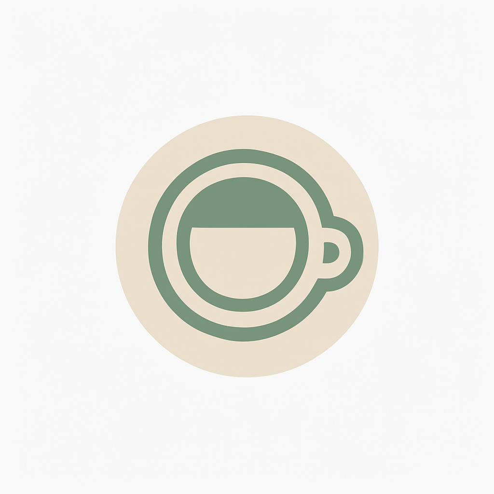

<main>
  <div class="main-card">
    
    <h1 style="font-size:2.5em; color:#222; margin-bottom:8px;">카페 숨</h1>
    <p style="font-size:1.18em; color:#5C7763; margin-bottom:18px;">고요함을 담은 한 잔의 커피, 도심 속 작은 쉼표</p>
  </div>
</main>
